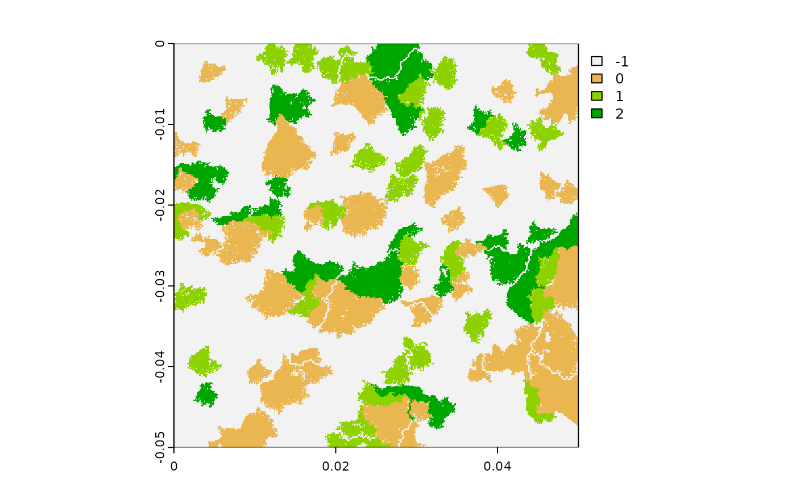

Use Case 1: Generating landscape series with fixed structure and varying spatial configurations
Source:vignettes/UseCase1.Rmd
UseCase1.RmdIn this use case, we will see how rflsgen can be used to generate a series of landscapes with a fixed composition and varying spatial configurations. First let’s load rflsgen:
Defining targets for landscape composition
Let’s say that, we want to generate 500x500 landscapes composed of three focal land-use classes: shrubland, savanna, and forest. A fourth non-focal land-use class will correspond to areas with no vegetation cover. The first thing we need to do is to define class-level composition targets for our focal classes. We keep it simple and just impose strict constraints on landscape proportion (PLAND), the number of patches (NP), and a looser constraint on patch area (AREA):
| Class | NP | AREA | PLAND |
|---|---|---|---|
| shrubland | 40 | [500, 3000] | 20% |
| savanna | 30 | [500, 3000] | 10% |
| forest | 20 | [500, 3000] | 10% |
We can use a JSON file or string to define these targets:
{
"nbRows" : 500,
"nbCols" : 500,
"classes" : [
{
"name" : "shrubland",
"NP" : [40, 40],
"AREA": [500, 3000],
"PLAND": [20, 20],
},
{
"name" : "savanna",
"NP" : [30, 30],
"AREA": [500, 3000],
"PLAND": [10, 10],
},
{
"name" : "forest",
"NP" : [20, 20],
"AREA": [500, 3000],
"PLAND": [10, 10],
}
]
}We can also use flsgen_create_class_targets and flsgen_create_landscape_targets functions:
shrubland <- flsgen_create_class_targets("shrubland", NP = c(40, 40), AREA = c(500, 3000), PLAND = c(20, 20))
savanna <- flsgen_create_class_targets("savanna", NP = c(30, 30), AREA = c(500, 3000), PLAND = c(10, 10))
forest <- flsgen_create_class_targets("forest", NP = c(20, 20), AREA = c(500, 3000), PLAND = c(10, 10))
ls_targets <- flsgen_create_landscape_targets(500, 500, list(shrubland, savanna, forest))Generating a landscape structure
To generate a landscape structure satisfying these targets, we use the flsgen_structure methods:
structure <- flsgen_structure(ls_targets)## Landscape structure 1 found in 0.2535198 sThis structure is formatted as a JSON string, which can be easily converted to a dataframe using the jsonlite package:
structure_df <- jsonlite::fromJSON(structure)
for (i in 1:nrow(structure_df$classes)) {
cat(paste(structure_df$classes[i,]$name, ":",
"\n\t number of patches", structure_df$classes[i,]$NP,
"\n\t smallest patch size", structure_df$classes[i,]$SPI,
"\n\t largest patch size", structure_df$classes[i,]$LPI, "\n\n"))
}## shrubland :
## number of patches 40
## smallest patch size 500
## largest patch size 3000
##
## savanna :
## number of patches 30
## smallest patch size 833
## largest patch size 834
##
## forest :
## number of patches 20
## smallest patch size 500
## largest patch size 3000Note: There is a search_strategy parameter in flsgen_structure which indicate to Choco-solver how to construct its search tree. Although this search strategy does not influence whether the targets will be satisfied or not, it can help diversify the generated structure by exploring the search tree in different ways. Available search strategies in Choco are: ""DEFAULT", "RANDOM", "DOM_OVER_W_DEG", "DOM_OVER_W_DEG_REF", "ACTIVITY_BASED", "CONFLICT_HISTORY", "MIN_DOM_LB", "MIN_DOM_UB" (please refer to Choco documentation if you want more details).
Generating our first landscape
At this point, we can quickly generate a landscape raster using the flsgen_generate method:
landscape <- flsgen_generate(structure, verbose = FALSE)
plot(landscape)
Varying spatial configuration
There are three parameters influencing the spatial configuration of produced landscapes in flsgen_generate:
- The
min_distanceparameter, defines the minimum distance between any two patches of the same class. - The
terrainparameter, is a continuous raster guiding the generation algorithm. - The
terrain_dependencyparameter, defines to which extent the generation algorithm is influenced by the terrain.
Terrain rasters can either be generated “on-the-fly” by flsgen, which relies on the diamond-square (or midpoint displacement) algorithm or given as input. This last option makes it possible to use continuous neutral landscapes generated with other software packages such as NLMR, or even digital elevation models from real landscapes.
Here, we will generate a landscape with various spatial configurations by varying the terrain dependency parameter. We also fix the roughness parameter to 0.2 for on-the-fly diamond-square terrain generation and the min_distance parameter to 4.
td_seq <- seq(0, 1, by=0.1)
landscapes <- lapply(td_seq, function(td) {
flsgen_generate(structure, roughness = 0.2, terrain_dependency = td, min_distance = 4, verbose = FALSE)
})
Although they look different, all these landscapes have the exact same composition. We can check this using the landscapemetrics package:
library(landscapemetrics)
# Number of patches for landscape 2 (td=0.1)
np_landscape_2 <- lsm_c_np(landscapes[[2]])
np_landscape_2[np_landscape_2$class > -1,]
# Number of patches for landscape 10 (td=0.9)
np_landscape_10 <- lsm_c_np(landscapes[[10]])
np_landscape_10[np_landscape_10$class > -1,]
# Proportion of landscape for landscape 3 (td=0.2)
pland_landscape_3 <- lsm_c_pland(landscapes[[3]])
pland_landscape_3[pland_landscape_3$class > -1,]
# Proportion of landscape for landscape 9 (td=0.8)
pland_landscape_9 <- lsm_c_pland(landscapes[[9]])
pland_landscape_9[pland_landscape_9$class > -1,]Using external raster continuous raster gradients
As the terrain parameter influences the spatial configuration of produced landscapes, we can use external rasters, from real data or from external software. Here we use NLMR to generate continuous gradients and use them as input for flsgen_generate
library(NLMR)
mrf <- nlm_mosaicfield(500, 500)
plg <- nlm_planargradient(500, 500)
edg <- nlm_edgegradient(500, 500)
dg <- nlm_distancegradient(500, 500, origin = c(20, 20, 20, 20))
rand <- nlm_random(500, 500)
fbm <- nlm_fbm(500, 500)
terrains <- c(mrf, plg, edg, dg, rand, fbm)
landscapes <- lapply(terrains, function(t) {
flsgen_generate(structure, terrain_file = t, terrain_dependency = 0.8, min_distance = 4)
})